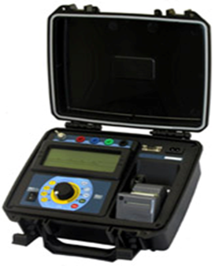

Medidor de resistencia (Miliohmimetro)
Los milióhmetros son equipos de medida indispensables para las medidas de baja resistencia eléctrica. Para la medición de resistencia, la precisión es fundamental. El objetivo de estos equipos es obtener medidas de la más alta calidad posible.
Los equipos necesarios para medir una resistencia eléctrica baja se llaman milióhmetros. Suelen ser digitales, y las características más importantes a tener en cuenta son:
- La precisión
- La resolución
- La alimentación (Batería y/o Red)
- La calidad y fiabilidad del equipo.
Pueden ser milióhmetros portátiles (para trabajos de campo) y sencillos de utilizar con varios rangos de medida seleccionables. La precisión suele ser de ±0,5% y la resolución de entre 0,1Ω y 1µΩ. También hay milióhmetros de banco (para laboratorio).
El Milihomimetro mide la resistencia óhmica de bobinados o devanados de los motores y transformadores, contactos en los seccionadores,etc., este equipo es importante para detectar falsos contactos internos en los motores y transformadores.
Esta prueba sirve para identificar la existencia de falsos contactos o puntos de alta resistencia en las soldaduras de los devanados o bobinados.
Cuando existan diferencias de valores entre las fases es indicativo de un falso contacto interno, lo cual provoca calentamiento en el equipo y a la larga un daño muy severo que obligara a retirar el equipo del servicio para su reparación.
¿Qué Diagnostica el miliohmimetro?: El estado de los conductores en las bobinas. Evaluación de cortocircuito entre espiras. Malas conexiones en terminales y/o uniones de bobinas la variación no debe ser mayor al 10 %
Aplicaciones
- Fabricación de componentes.
- Resistencias, inductores; hay que verificar que los componentes cumplan con la tolerancia de precisión de la resistencia especificada, con el fin de verificar un control de calidad óptimo.
- Fabricantes de interruptores y conectores.
- Es importante para verificar que la resistencia de contacto sea menor a los límites preestablecidos según el nivel de calidad. Esto puede lograrse al finalizar el testeo de la línea de producción, asegurando el control de calidad.
- Los milióhmetros también son de gran utilidad para fabricantes de cables, fabricantes de motores eléctricos, transformadores y generadores, industria de automoción, industria automotriz, fabricantes de fusibles, rieles de distribución, etc.